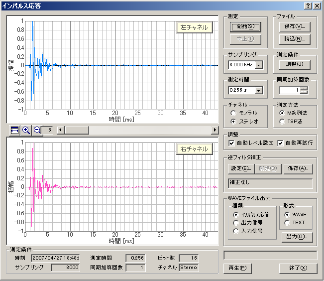
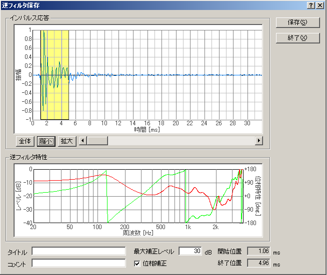
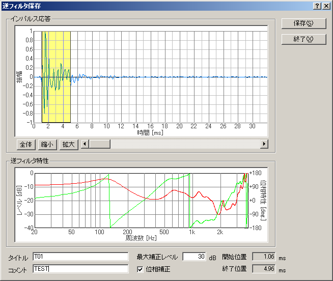
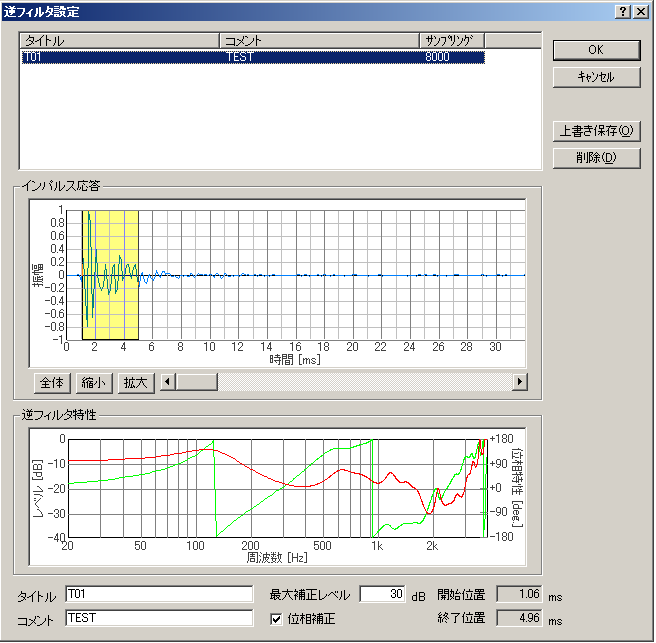
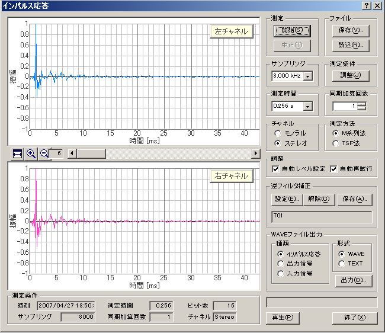

DSSF3 > RA > インパルス応答測定 > 高度な使用法のノウハウ
マイク校正、逆フィルタ補正
インパルス応答を正確に測定するための機能として、リアルタイムアナライザ（以下、RAと表記）には自動レベル調整、自動再試行、同期加算の機能が備わっています。しかし、これらの機能だけでは十分な結果を得るのは難しいです。特に使用するマイクやスピーカの性能が問題になります。特性の優れた測定用マイクやスピーカ、サウンドボードを使用することが、正しい測定結果につながります。
しかし、一般的なマイクやスピーカであっても、補正することである程度の測定精度を上げることができます。RAには補正のための機能としてマイク校正機能と逆フィルタ補正機能が備わっています。
マイク校正方法
使用するマイクの感度校正と周波数特性の補正が可能です。校正ウインドウは、FFTアナライザから開くことができます。詳しい使用方法は、操作マニュアルの中のマイク情報の登録、リファレンスマニュアルの中のFFTアナライザ（マイク校正ウィンドウ）をご覧ください。
逆フィルタ補正
試験用スピーカー、マイク、アンプ等の機器を含めた測定システム全体の応答関数を逆関数としてセットして補正することが可能です。測定システム自身のインパルス応答を取り除くことにより、 音場そのもののインパルス応答を測定することができます。以下に逆フィルタの設定方法を説明します。設定画面の詳しい説明は、リファレンスマニュアルの中のインパルス応答/逆フィルタ補正の項目をご覧下さい。
- 逆フイルタを作成ためには、まずスピーカーの直前にマイクをおいてインパルス応答の測定を行ってください。 測定が終わったら、逆フイルタ補正の[保存]ボタンをクリックしてください。

- この画面では、測定されたインパルス応答からマイクやスピーカーによるものを切り出します。取得したインパルス応答から直接音の部分だけを指定してください。また、補正の上限を最大補正レベルに入力してください（ここでは30dB）。 この値には制限はありません。大きな値をセットしておけば、無制限に補正します。 ただし、あまり急激なピークやディップは補正できません。

- 設定が終わったら、タイトルとコメントを入力して[保存]ボタンをクリックしてください。保存した逆フイルタは、サウンドカード、出力アンプ、マイク用入力アンプ、 マイクなどの測定システム全体の応答関数を補正するものです。

- 保存した逆フイルタをインパルス応答測定時にあらかじめセットしておけば、システムの応答関数を差し引いた残りのインパルス応答（純粋な音響空間の特性）が測定できます。

- 逆フイルタ補正の設定で、保存したデータを指定して再度測定してみます。最初のインパルス応答に比べて余分な応答（波形）が少なくなっていることがわかります。

DSSF3 > RA > インパルス応答測定 > 高度な使用法のノウハウ